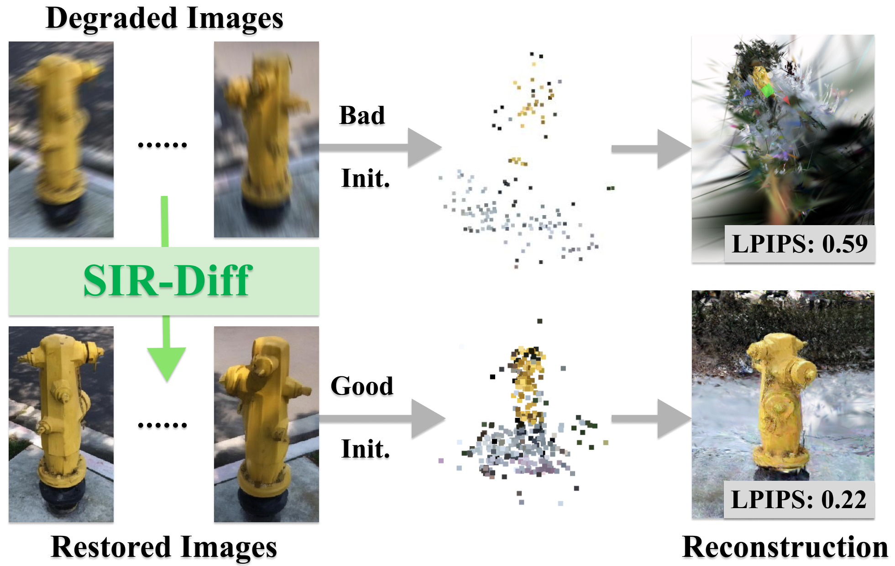
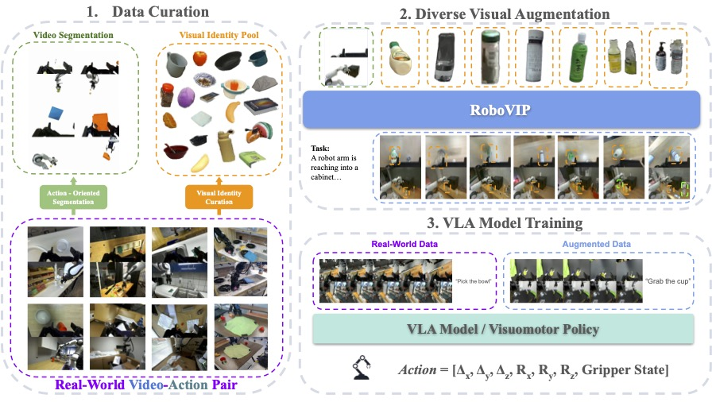

Education
UC San Diego
M.S. Computer Science
Advisor: Prof. Zhuowen Tu
2025 – Present
Univ. of Science & Technology Beijing
B.S. in Applied Mathematics
2020 – 2024
Research Advisors
Prof. Zhuowen Tu
· UCSD
Prof. Jeong Joon Park
· UMich
Shanghai AI Lab
· Research Intern
Selected Publications

SIGGRAPH Asia 2025
AnySplat: Feed-forward 3D Gaussian Splatting from Unconstrained Views
3D Gaussian Splatting from unconstrained views within seconds

CVPR 2025
Sparse Image Sets Restoration with Multi-View Diffusion Model
3D reconstruction from degraded multi-view observations

CVPR 2026 Submission
RoboVIP: Multi-View Video Generation with Visual Identity Prompting Augments Robot Manipulation
Video generation for embodied AI and robot learning